Results
1. 2D Shape Optimization
| Ours MLP | Gaussian | Logistic | Exponential(R) | Gamma(R,0.5) |
|---|---|---|---|---|
| Optimization Reference | Optimization Reference | Optimization Reference | Optimization Reference | Optimization Reference |
| 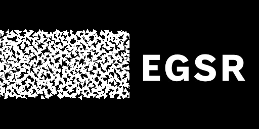 | 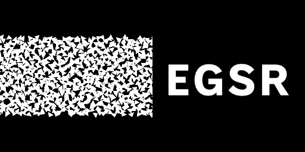 | 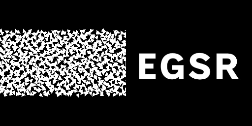 | ||
| 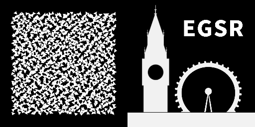 | 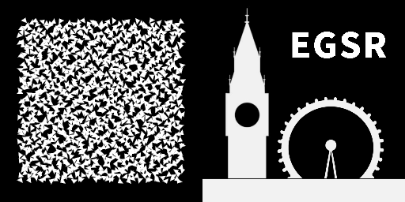 | 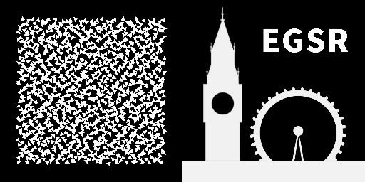 |
2. 3D Shape Optimization
3. Pose Optimization
| 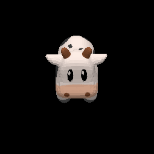 | 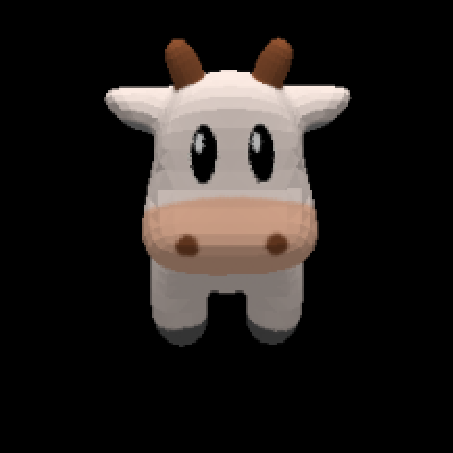 | 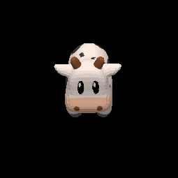 | 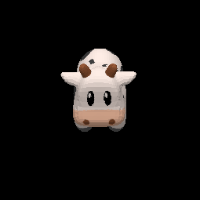 |
4. Occlusion Optimization
| 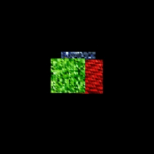 | 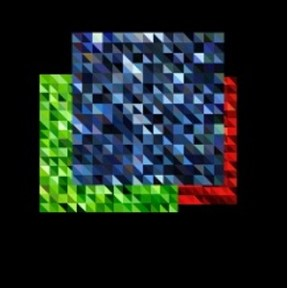 |  |